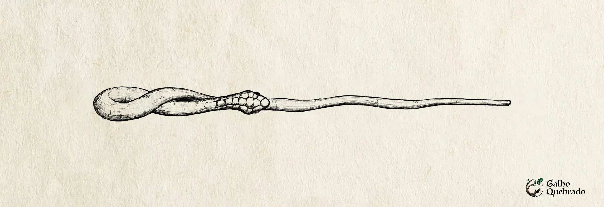

Pajé Kunhã
- Região: Norte;
- Estado: Amapá;
- Núcleo: Escama da Cobra Sofia;
- Material: Amapazeira
- Flexibilidade: Flexível;
- Tamanho: 34 cm;
- Significado do nome: Curandeira.
-
História e Origem Nem todas as varinhas nascem para o combate. Algumas são feitas para curar, proteger e restaurar o equilíbrio do mundo mágico. Pajé Kunhã é uma dessas varinhas. Desde que comecei sua confecção, senti que estava moldando algo diferente, algo que carregava não apenas magia, mas também compaixão.
Seu corpo foi esculpido na madeira do amapazeiro, a árvore que muitos consideram a mais poderosa em termos medicinais dentro da Amazônia. Seu tronco imponente guarda em seu interior a seiva da vida, uma substância capaz de curar e prevenir doenças, restaurando até os mais exaustos viajantes que a encontram em meio à floresta. Não havia escolha melhor para essa varinha, que carrega consigo o dom da regeneração.
Mas o verdadeiro coração de Pajé Kunhã está em seu núcleo: uma escama da cobra Sofia. Sua origem remonta a uma das mais belas e trágicas lendas do Amapá. Conta-se que Sofia nasceu do amor proibido entre o espírito Bottokuchi e a índia Icorã, prometida a Tupã. Temendo o castigo dos deuses, Icorã lançou sua filha recém-nascida ao rio, onde Bottokuchi a resgatou e a transformou numa imensa cobra d’água, guardiã dos rios e dos segredos ancestrais. Da sua forma humana, restou apenas a cor mel de seus olhos, a mesma de sua mãe.
Com a resiliência das escamas de Sofia e o poder curativo do amapazeiro, Pajé Kunhã se tornou uma varinha sem igual. Ideal para feitiços de cura, proteção e cuidado com criaturas mágicas, sua flexibilidade permite uma sintonia fina com a magia, tornando-a excepcional para transfigurações que exigem delicadeza e precisão. Seu tamanho, 34 centímetros, reflete sua imponência, mas não se engane—essa varinha não busca um mestre de mãos firmes, e sim um coração puro.
Ela não se entregará a qualquer um. Pajé Kunhã é relativamente fiel, o que significa que não trairá seu bruxo facilmente, mas pode ser influenciada por aqueles que compartilham de sua essência benevolente. No fim, será sempre a varinha a fazer a escolha, procurando alguém com a alma de um curandeiro, que entenda que magia não é apenas poder, mas também cuidado.
-
Etimologia - "Pajé" significa "curandeiro" ou "xamã", alguém com conhecimento espiritual e de cura. - "Kunhã" significa "mulher". Portanto, "Pajé Kunhã" pode ser uma forma de traduzir "Curandeira" em Tupi-Guarani -
